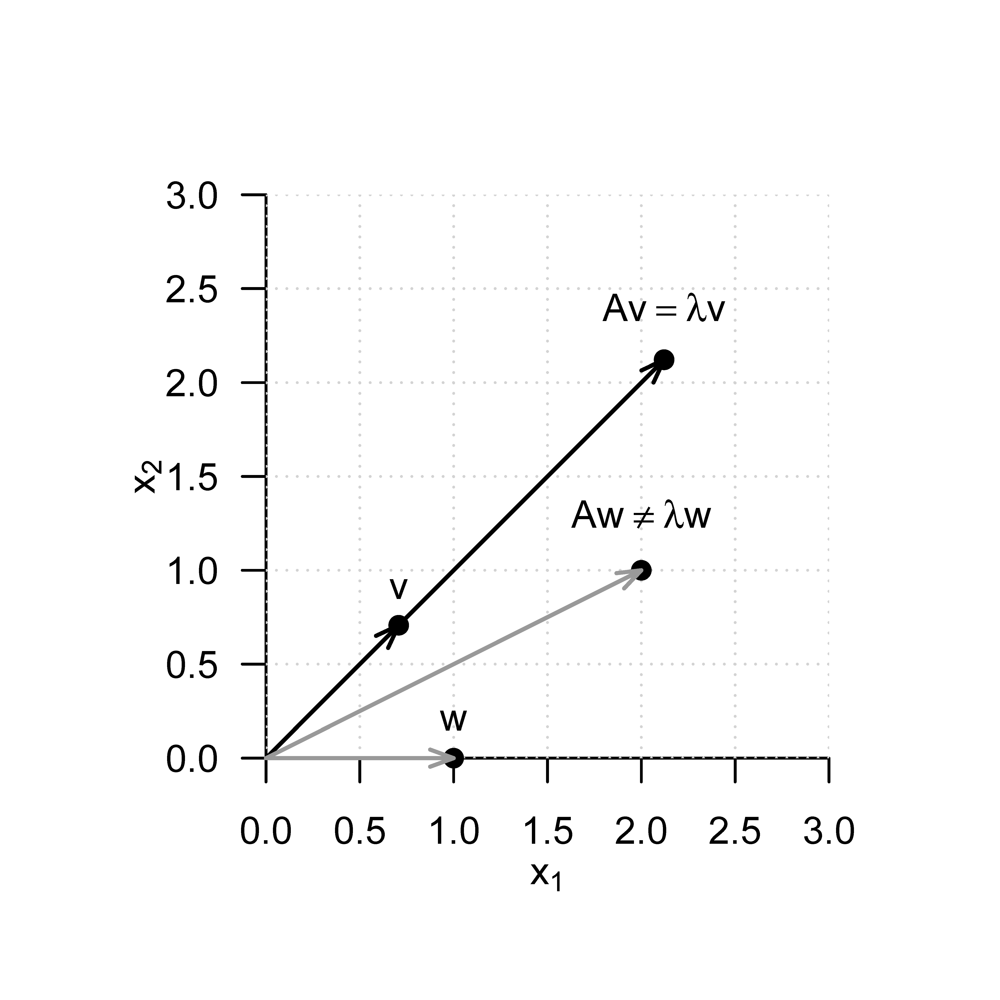

eigen() decomposition
$values
[1] 3 1
$vectors
[,1] [,2]
[1,] 0.7071068 -0.7071068
[2,] 0.7071068 0.707106810 Eigenanalyse
Mit der Eigenanalyse einer quadratischen Matrix, der Orthonormalzerlegung einer symmetrischen Matrix und der Singulärwertzerlegung einer beliebigen Matrix behandeln wir in diesem Abschnitt drei eng zusammenhängende Konzepte der Matrixtheorie, die in vielen Gebieten der datenanalytischen Anwendung zentrale Rollen spielen. Allerdings erschließt sich die Bedeutung dieser Konzepte dann vor allem im jeweiligen Anwendungskontext, so dass dieser Abschnitt notwendigerweise etwas abstrakt anmuten mag.
10.1 Eigenvektoren und Eigenwerte
Unter der Eigenanalyse einer quadratischen Matrix versteht man das bestimmen ihrer Eigenvektoren und Eigenwerte. Diese sind für eine quadratische Matrix wie folgt definiert.
Definition 10.1 (Eigenvektor und Eigenwert) \(A \in \mathbb{R}^{m \times m}\) sei eine quadratische Matrix. Dann heißt jeder vom Nullvektor \(0_m\) verschiedene Vektor \(v \in \mathbb{R}^m\), für den mit einem Skalar \(\lambda \in \mathbb{R}\) gilt, dass \[\begin{equation} Av = \lambda v \end{equation}\] ist, ein Eigenvektor von \(A\) und \(\lambda\) heißt dann ein Eigenwert von \(A\).
Nach Definition hat also jeder Eigenvektor einen zugehörigen Eigenwert, allerdings können die Eigenwerte verschiedener Eigenvektoren durchaus identisch sein. Intuitiv bedeutet die Definition von Eigenvektor und Eigenwert, dass ein Eigenvektor einer Matrix durch Multiplikation mit eben dieser Matrix in seiner Länge, nicht aber in seiner Richtung, verändert wird. Der zugehörige Eigenwert des Eigenvektors entspricht dem Faktor der Längenänderung. Allerdings ist die Zuordnung von Eigenvektoren und Eigenwerten nicht eindeutig, wie folgendes Theorem zeigt.
Theorem 10.1 (Multiplikativität von Eigenvektoren) \(A \in \mathbb{R}^{m \times m}\) sei eine quadratische Matrix. Wenn \(v \in \mathbb{R}^m\) Eigenvektor von \(A\) mit Eigenwert \(\lambda \in \mathbb{R}\) ist, dann ist für \(c \in \mathbb{R}\) auch \(cv \in \mathbb{R}^m\) Eigenvektor von \(A\) und zwar wiederum mit Eigenwert \(\lambda \in \mathbb{R}\).
Beweis. Es gilt \[\begin{equation} Av = \lambda v \Leftrightarrow cAv = c\lambda v \Leftrightarrow A(cv) = \lambda(cv). \end{equation}\] Also ist \(cv\) ein Eigenvektor von \(A\) mit Eigenwert \(\lambda\).
Um nun die Uneindeutigkeit in der Definition des zu einem Eigenwert zugeordneten Eigenvektors aufzulösen, nutzen wir die Konvention, nur diejenigen Vektoren also Eigenvektoren zu einem Eigenwert \(\lambda\) zu betrachten, die die Länge 1 haben, für die also gilt, dass \[\begin{equation} \Vert v \Vert = 1. \end{equation}\] Sollten wir also einen Eigenvektor \(v\) zu einem Eigenwert \(\lambda\) einer Matrix \(A\) finden, der nicht von der Länge 1 ist, so können wir ihn immer mit \(\Vert v \Vert^{-1}\) multiplizieren. Der resultierende Vektor \(v' = v/\Vert v \Vert\) hat dann die Länge 1 und ist nach Theorem 10.1 ebenso ein Eigenvektor von \(A\) zum Eigenwert \(\lambda\). Bevor wir uns der Bestimmung von Eigenwerten und Eigenvektoren widmen, wollen wir die Konzepte von Eigenwert und Eigenvektor für den Fall einer \(2 \times 2\) Matrix an einem Beispiel veranschaulichen
Beispiel
Es sei \[\begin{equation} A := \begin{pmatrix} 2 & 1 \\ 1 & 2 \end{pmatrix} \end{equation}\] Dann ist der Vektor der Länge 1 \[\begin{equation} v := \frac{1}{\sqrt{2}} \begin{pmatrix} 1 \\ 1 \end{pmatrix} \end{equation}\] ein Eigenvektor von \(A\) zum Eigenwert \(\lambda = 3\), da gilt, dass \[\begin{align} \begin{split} Av & = \begin{pmatrix} 2 & 1 \\ 1 & 2 \end{pmatrix} \left( \frac{1}{\sqrt{2}} \begin{pmatrix} 1 \\ 1 \end{pmatrix} \right) \\ & = \frac{1}{\sqrt{2}} \begin{pmatrix} 2 & 1 \\ 1 & 2 \end{pmatrix} \begin{pmatrix} 1 \\ 1 \end{pmatrix} \\ & = \frac{1}{\sqrt{2}} \begin{pmatrix} 3 \\ 3 \end{pmatrix} \\ & = \frac{1}{\sqrt{2}} 3 \begin{pmatrix} 1 \\ 1 \end{pmatrix} \\ & = 3 \left( \frac{1}{\sqrt{2}} \begin{pmatrix} 1 \\ 1 \end{pmatrix} \right) \\ & = \lambda v. \end{split} \end{align}\] Inspektion von Abbildung 10.1 zeigt dementsprechend, dass für die hier definierte Matrix \(A\) die Vektoren \(v\) und \(Av\) in die gleiche Richtung zeigen, dass aber \(Av\) um den Faktor \(\lambda\) länger ist als \(v\).
Der Vektor \[\begin{equation} w := \begin{pmatrix} 1 \\ 0 \end{pmatrix} \end{equation}\] dagegen hat zwar die Länge 1, ist aber im Gegensatz zu \(v\) kein Eigenvektor von \(A\), da es im Falle von \[\begin{equation} Aw = \begin{pmatrix} 2 & 1 \\ 1 & 2 \end{pmatrix} \begin{pmatrix} 1 \\ 0 \end{pmatrix} = \begin{pmatrix} 2 \\ 1 \end{pmatrix} \end{equation}\] keinen Skalar \(\lambda\) geben kann, der mit Null, dem zweiten Eintrag von \(w\), multipliziert einen Wert ungleich Null ergeben kann. Inspektion von Abbildung 10.1 zeigt dementsprechend, dass der aus der Multiplikation von \(w\) mit \(A\) resultierende Vektor in eine andere Richtung zeigt als \(w\).

Bestimmung von Eigenwerten und Eigenvektoren
Folgendes Theorem besagt, wie die Eigenwerte und Eigenvektoren einer quadratischen Matrix berechnet werden können.
Theorem 10.2 (Bestimmung von Eigenwerten und Eigenvektoren) \(A \in \mathbb{R}^{m \times m}\) sei eine quadratische Matrix. Dann ergeben sich die Eigenwerte von \(A\) als die Nullstellen des \[\begin{equation} \chi_A(\lambda) := |A - \lambda I_m| \end{equation}\] von \(A\). Weiterhin seien \(\lambda_i^*, i = 1,2,...\) die auf diese Weise bestimmten Eigenwerte von \(A\). Die entsprechenden Eigenvektoren \(v_i, i = 1,2,...\) von \(A\) können dann durch Lösen der linearen Gleichungssysteme \[\begin{equation} (A - \lambda_i^* I_m)v_i = 0_m \mbox{ für } i = 1,2,... \end{equation}\] bestimmt werden.
Beweis. (1) Bestimmen von Eigenwerten
Wir halten zunächst fest, dass mit der Definition von Eigenvektoren und Eigenwerten gilt, dass \[\begin{equation} Av = \lambda v \Leftrightarrow Av - \lambda v = 0_m \Leftrightarrow (A - \lambda I_m)v = 0_m. \end{equation}\] Für den Eigenwert \(\lambda\) wird der Eigenvektor \(v\) also durch Multiplikation mit \((A - \lambda I_m)\) auf den Nullvektor \(0_m\) abgebildet. Weil aber per Definition \(v \neq 0_m\) gilt, ist die Matrix \((A - \lambda I_m)\) somit nicht invertierbar: sowohl der Nullvektor als auch \(v\) werden durch \(A\) auf \(0_m\) abgebildet, die Abbildung \[\begin{equation} f : \mathbb{R}^m \to \mathbb{R}^m, x \mapsto (A - \lambda I_m)x \end{equation}\] ist also nicht bijektiv, und \((A - \lambda I_m)^{-1}\) kann nicht existieren. Die Tatsache, dass \((A - \lambda I_m)\) nicht invertierbar ist, ist aber äquivalent dazu, dass die Determinante von \((A -\lambda I_m)\) gleich Null ist. Also ist \[\begin{equation} \chi_A(\lambda) = |A - \lambda I_m| = 0 \end{equation}\] eine notwendige und hinreichende Bedingung dafür, dass \(\lambda\) ein Eigenwert von \(A\) ist.
(2) Bestimmen von Eigenvektoren
Es sei \(\lambda_i^*\) ein Eigenwert von \(A\). Dann gilt mit den obigen Überlegungen, dass Auflösen von \[\begin{equation} (A - \lambda_i^* I_m)v_i^* = 0_m \end{equation}\] nach \(v_i^*\) einen Eigenvektor zum Eigenwert \(\lambda^*\) ergibt.
Allgemein müssen zur Bestimmung von Eigenwerten und Eigenvektoren also Polynomnullstellen bestimmt und lineare Gleichungssysteme gelöst werden. Dies kann für kleine Matrizen mit \(m \le 4\) durchaus manuell geschehen. Die in der Anwendung auftretetenden Matrizen sind jedoch meist weitaus größer, so dass zur Eigenananalyse numerische Verfahren der Nullstellenbestimmung und des Lösens linearer Gleichungssysteme eingesetzt werden, die zum Beispiel in Funktionen wie R’s eigen(), SciPy’s linalg.eig() oder Julia’s eigvals() und eigvecs() genutzt werden. Für Details zu diesen Verfahren verweisen wir auf die weiterführende Literatur, zum Beispiel Burden et al. (2016) und Richter & Wick (2017). Wir wollen Theorem 10.2 hier lediglich anhand eines Beispiels illustrieren.
Beispiel
Dazu sei wiederum \[\begin{equation} A := \begin{pmatrix*}[r] 2 & 1 \\ 1 & 2\end{pmatrix*} \end{equation}\] Wir wollen zunächst die Eigenwerte von \(A\) berechnen. Nach Theorem 10.2 sind dies die Nullstellen des charakteristischen Polynoms von \(A\). Wir berechnen also zunächst das charakteristische Polynom von \(A\) durch \[\begin{equation} \chi_A(\lambda) = \left\vert \begin{pmatrix*}[r] 2 & 1 \\ 1 & 2\end{pmatrix*} - \begin{pmatrix*}[r] \lambda & 0 \\ 0 & \lambda \end{pmatrix*} \right\vert = \left\vert \begin{pmatrix*}[r] 2 - \lambda & 1 \\ 1 & 2 - \lambda \end{pmatrix*} \right\vert = (2 - \lambda)^2 - 1. \end{equation}\] Mithilfe der pq-Formel zur Lösung quadratischer Gleichungen findet man dann \[\begin{equation} (2 - \lambda^*_{1/2})^2 - 1 = 0 \Leftrightarrow \lambda_1^* = 3 \mbox{ oder } \lambda_2^* = 1. \end{equation}\] Die Eigenwerte von \(A\) sind also \(\lambda_1 = 3\) und \(\lambda_2 = 1\). Die zugehörigen Eigenvektoren ergeben sich dann für \(i = 1,2\) durch Lösen des linearen Gleichungssystems \[\begin{equation} (A - \lambda_i I_2)v_i = 0_2. \end{equation}\] Speziell ergibt sich hier, dass für \(\lambda_1 = 3\) aus \[\begin{equation} (A - 3I_2)v_1 = 0_2 \Leftrightarrow \begin{pmatrix*}[r] -1 & 1 \\ 1 & -1 \end{pmatrix*} \begin{pmatrix*}[r] v_{1_1} \\ v_{1_2} \end{pmatrix*} = \begin{pmatrix*}[r] 0 \\ 0 \end{pmatrix*} \end{equation}\] folgt, dass \[\begin{equation} v_1 = \frac{1}{\sqrt{2}} \begin{pmatrix*}[r] 1 \\ 1 \end{pmatrix*} \end{equation}\] ein Eigenvektor zum Eigenwert \(\lambda_1\) ist und dass für \(\lambda_2 = 1\) aus \[\begin{equation} (A - 1I_2)v_2 = 0_2 \Leftrightarrow \begin{pmatrix*}[r] 1 & 1 \\ 1 & 1 \end{pmatrix*} \begin{pmatrix*}[r] v_{2_1} \\ v_{2_2} \end{pmatrix*} = \begin{pmatrix*}[r] 0 \\ 0 \end{pmatrix*} \end{equation}\] folgt, dass \[\begin{equation} v_2 = \frac{1}{\sqrt{2}} \begin{pmatrix*}[r] -1 \\ 1 \end{pmatrix*} \end{equation}\] ein Eigenvektor zum Eigenwert \(\lambda_2 = 1\) ist. Weiterhin gelten hier offenbar \[\begin{equation} v_1^Tv_2 = 0 \mbox{ und } \Vert v_1 \Vert = \Vert v_2 \Vert = 1. \end{equation}\]
Folgender R Code demonstriert die Bestimmung der Eigenwerte und Eigenvektoren der hier betrachteten Matrix mithilfe der eigen() Funktion.
Zum Abschluss dieses Abschnittes betrachten wir zwei technische Theoreme, die Aussagen zum Zusammenhang spezieller Matrixprodukte und ihrer Eigenwerte und Eigenvektoren machen. Wir benötigen dieses Theoreme im Kontext der Kanonischen Korrelationsanalyse (?sec-kanonische-korrelationsanalyse).
Theorem 10.3 (Eigenwerte und Eigenvektoren von Matrixprodukten) Für \(A \in \mathbb{R}^{n \times m}\) und \(B \in \mathbb{R}^{m \times n}\) sind die Eigenwerte von \(AB \in \mathbb{R}^{n \times n}\) und \(BA \in \mathbb{R}^{m \times m}\) gleich. Weiterhin gilt, dass für einen Eigenvektor \(v\) zu einem von Null verschiedenen Eigenwert \(\lambda\) von \(AB\) \(w := Bv\) ein Eigenvektor von \(BA\) zum Eigenwert \(\lambda\) ist.
Für einen Beweis verweisen wir auf Mardia et al. (1979), S. 468. Wir demonstrieren die Aussage dieses Theorems anhand untenstehenden R Codes.
A = matrix(1:6, nrow = 2, byrow = T) # Matrix A \in \mathbb{R}^{2 x 3}
B = matrix(1:6, ncol = 2, byrow = T) # Matrix B \in \mathbb{R}^{3 x 2}
EAB = eigen(A %*% B) # Eigenanalyse von AB \in \mathbb{R}^{2 \times 2}
EBA = eigen(B %*% A) # Eigenanalyse von BA \in \mathbb{R}^{3 \times 3}
w = B %*% EAB$vectors[,1] # Eigenvektor von BA
cat("Eigenwerte von AB :" , EAB$values[1:2],
"\nEigenwerte von BA :", EBA$values[1:2],
"\nBAw mit w = Bv :", B %*% A %*% w,
"\nlw mit w = Bv :", EBA$values[1] * w)Eigenwerte von AB : 85.57934 0.4206623
Eigenwerte von BA : 85.57934 0.4206623
BAw mit w = Bv : -191.1333 -416.7586 -642.3839
lw mit w = Bv : -191.1333 -416.7586 -642.3839Theorem 10.4 Für \(A \in \mathbb{R}^{n \times m}, B \in \mathbb{R}^{p \times n}, a \in \mathbb{R}^m\) und \(b \in \mathbb{R}^p\) gilt, dass der einzige von Null verschiedene Eigenwert von \(Aab^TB \in \mathbb{R}^{n \times n}\) gleich \(b^T BAa\) mit zugehörigem Eigenvektor \(Aa\) ist.
Für einen Beweis verweisen wir auf Mardia et al. (1979), S. 468. Wir demonstrieren die Aussage dieses Theorems anhand untenstehenden R Codes.
A = matrix(1:6, nrow = 2, byrow = T) # Matrix A \in \mathbb{R}^{2 x 3}
B = matrix(1:8, ncol = 2, byrow = T) # Matrix B \in \mathbb{R}^{4 x 2}
a = matrix(1:3, nrow = 3, byrow = T) # Vektor a \in \mathbb{R}^{3 x 1}
b = matrix(1:4, nrow = 4, byrow = T) # Vektor b \in \mathbb{R}^{4 x 1}
EAabTB = eigen(A %*% a %*% t(b) %*% B) # Eigenanalyse von Aab^TB \in \mathbb{R}^{4 x 4}
cat("Eigenwerte von AabTB :", EAabTB$values,
"\nbTBAa :", t(b) %*% B %*% A %*% a,
"\nAa :", A %*% a,
"\n(AabTB)Aa :",(A %*% a %*% t(b) %*% B) %*% A %*% a, # Mv
"\n(bTBAa)Aa :",as.vector((t(b) %*% B %*% A %*% a)) * (A %*% a)) # = \lambda vEigenwerte von AabTB : 2620 0
bTBAa : 2620
Aa : 14 32
(AabTB)Aa : 36680 83840
(bTBAa)Aa : 36680 8384010.2 Orthonormalzerlegung
Mit dem Begriff der Zerlegung einer Matrix wird das Aufspalten einer gegebenen Matrix in das Matrixprodukt mehrerer Matrizen bezeichnet. Verschiedenste Matrixzerlegungen spielen in vielen mathematischen Anwendungen eine wichtige Rolle, für einen Überblick siehe beispielsweise Golub & Van Loan (2013). In diesem Abschnitt führen wir mit der Orthonormalzerlegung einer symmetrischen Matrix eine spezielle Matrixzerlegung ein, die direkt auf der Eigenanalyse aufbaut. Wir halten zunächst folgendes grundlegendes Theorem zu den Eigenwerten und Eigenvektoren symmetrischer Matrizen fest.
Theorem 10.5 (Eigenwerte und Eigenvektoren symmetrischer Matrizen)
\(S \in \mathbb{R}^{m \times m}\) sei eine symmetrische Matrix. Dann geltenBeweis. Wir setzen die Tatsache, dass eine symmetrische Matrix \(m\) reelle Eigenwerte hat, als gegeben voraus und zeigen lediglich, dass die Eigenvektoren zu je zwei verschiedenen Eigenwerten einer symmetrischen Matrix orthogonal sind. Ohne Beschränkung der Allgemeinheit seien also \(\lambda_i, \lambda_j \in \mathbb{R}\) mit \(1 \le i,j \le m\) und \(\lambda_i \neq \lambda_j\) zwei verschiedenen Eigenwerte von \(S\) mit zugehörigen Eigenvektoren \(q_i\) und \(q_j\), respektive. Dann ergibt sich wie unten gezeigt, dass \[\begin{equation} \lambda_i q_i^Tq_j = \lambda_j q_i^Tq_j. \end{equation}\] Mit \(q_i \neq 0_m, q_j \neq 0_m\) und \(\lambda_i \neq \lambda_j\) folgt damit \(q_i^Tq_j = 0\), weil weil es keine andere Zahl \(c\) als die Null gibt, für die bei \(a,b\in \mathbb{R}\) und \(a \neq b\) gilt, dass \[\begin{equation} ac = bc. \end{equation}\] Um abschließend \[\begin{equation} \lambda_i q_i^Tq_j = \lambda_j q_i^Tq_j. \end{equation}\] zu zeigen, halten wir zunächst fest, dass \[\begin{equation} Sq_i = \lambda_i q_i \Leftrightarrow (Sq_i)^T = (\lambda_i q_i)^T \Leftrightarrow q_i^TS^T = q_i^T \lambda_i^T \Leftrightarrow q_i^T S = q_i^T \lambda_i \Leftrightarrow q_i^T Sq_j = \lambda_i q_i^Tq_j \end{equation}\] und \[\begin{equation} Sq_j = \lambda_j q_j \Leftrightarrow q_j^T S = q_j^T \lambda_j \Leftrightarrow q_j^T Sq_i = \lambda_j q_j^Tq_i \Leftrightarrow (q_j^T S q_i)^T = (\lambda_j q_j^Tq_i)^T \Leftrightarrow q_i^T S q_j = \lambda_j q_i^Tq_j \end{equation}\] gelten. Sowohl \(\lambda_i q_i^Tq_j\) als auch \(\lambda_j q_i^Tq_j\) sind also mit \(q_i^T Sq_j\) und damit auch miteinander identisch.
Offenbar haben wir nur Aussage (2) von Theorem 10.5 bewiesen. Ein vollständiger Beweis des Theorems findet sich zum Beispiel bei Strang (2009). Wir merken außerdem an, dass, weil wir nach Konvention Eigenvektoren der Länge 1 betrachten, die in Theorem 10.5 angesprochenen orthogonalen Eigenvektoren insbesondere auch orthonormal sind. Mithilfe von Theorem 10.5 können wir nun die Orthonormalzerlegung einer symmetrischen Matrix formulieren und ihre Existenz beweisen.
Theorem 10.6 (Orthonormalzerlegung einer symmetrischen Matrix) \(S \in \mathbb{R}^{m \times m}\) sei eine symmetrische Matrix mit \(m\) verschiedenen Eigenwerten. Dann kannn \(S\) geschrieben werden als \[\begin{equation} S = Q \Lambda Q^T, \end{equation}\] wobei \(Q \in \mathbb{R}^{m \times m}\) eine orthogonale Matrix ist und \(\Lambda \in \mathbb{R}^{m\times m}\) eine Diagonalmatrix ist.
Beweis. Es seien \(\lambda_1 > \lambda_2 > ... > \lambda_m\) die der Größe nach geordneten Eigenwerte von \(S\) und \(q_1,...,q_m\) die zugehörigen orthonormalen Eigenvektoren. Mit \[\begin{equation} Q := \begin{pmatrix*}[r] q_1 & q_2 & \cdots & q_m \end{pmatrix*} \in \mathbb{R}^{m \times m} \mbox{ und } \Lambda := \mbox{diag}\begin{pmatrix*}[r] \lambda_1,\lambda_2,...,\lambda_m \end{pmatrix*} \in \mathbb{R}^{m \times m}, \end{equation}\] folgt dann mit den Definitionen von Eigenwerten und Eigenvektoren zunächst, dass \[\begin{equation} Sq_i = \lambda_i q_i \mbox{ für } i = 1,...,m \Leftrightarrow SQ = Q\Lambda. \end{equation}\] Rechtseitige Multiplikation mit \(Q^T\) ergibt dann mit \(QQ^T = I_m\), dass \[\begin{equation} SQQ^T = Q \Lambda Q^T \Leftrightarrow SI_m = Q \Lambda Q^T \Leftrightarrow S = Q \Lambda Q^T. \end{equation}\]
Man nennt das Aufspalten von \(S\) in das Matrixprodukt \(Q\Lambda Q^T\) aufgrund der Diagonalität von \(\Lambda\) auch eine Diagonalisierung von \(S\). Wie im Beweis gezeigt, wählt man zur Darstellung von \(S\) in Diagonaldarstellung für die Diagonalelemente von \(\Lambda\) die der Größe nach geordneten Eigenwerte von \(S\) und für die Spalten von \(Q\) die jeweils zugehörigen Eigenvektoren von \(S\). Wir verdeutlichen dies an einem Beispiel.
Beispiel
Für die symmetrische Matrix \[\begin{equation} A = \begin{pmatrix} 2 & 1 \\ 1 & 2 \end{pmatrix} \end{equation}\] mit den oben bestimmten Eigenwerten \(\lambda_1 = 3\) und \(\lambda_2 = 1\) sowie den zugehörigen orthonormalen Eigenvektoren \[\begin{equation} v_1 = \frac{1}{\sqrt{2}} \begin{pmatrix*}[r] 1 \\ 1 \end{pmatrix*}, v_2 = \frac{1}{\sqrt{2}} \begin{pmatrix*}[r] -1 \\ 1 \end{pmatrix*} \end{equation}\] seien \[\begin{equation} Q := \begin{pmatrix*}[r] v_1 & v_2 \end{pmatrix*} \mbox{ und } \Lambda = \mbox{diag}(\lambda_1,\lambda_2). \end{equation}\] Dann ergibt sich offenbar \[\begin{align*} Q\Lambda Q^T & = \begin{pmatrix*}[r] v_1 & v_2 \end{pmatrix*} \mbox{diag}(\lambda_1,\lambda_2) \begin{pmatrix*}[r] v_1 & v_2 \end{pmatrix*}^T \\ & = \left( \frac{1}{\sqrt{2}} \begin{pmatrix*}[r] 1 & -1\\ 1 & 1 \end{pmatrix*} \begin{pmatrix*}[r] 3 & 0 \\ 0 & 1 \end{pmatrix*} \right) \left( \frac{1}{\sqrt{2}} \begin{pmatrix*}[r] 1 & 1 \\ -1 & 1 \end{pmatrix*} \right) \\ & = \left( \frac{1}{\sqrt{2}} \begin{pmatrix*}[r] 3 & -1 \\ 3 & 1 \end{pmatrix*} \right) \left( \frac{1}{\sqrt{2}} \begin{pmatrix*}[r] 1 & 1 \\ -1 & 1 \end{pmatrix*} \right) \\ & = \frac{1}{2} \begin{pmatrix*}[r] 4 & 2 \\ 2 & 4 \end{pmatrix*} \\ & = \begin{pmatrix*}[r] 2 & 1 \\ 1 & 2 \end{pmatrix*} \\ & = A \end{align*}\] und wir haben Theorem 10.6 für dieses Beispiel verifiziert.
Symmetrische Quadratwurzel einer Matrix
Die Definition der Orthonormalzerlegung einer symmetrischen Matrix erlaubt es, den Begriff der symmetrischen Quadratwurzel einer Matrix einzuführen.
Definition 10.2 (Symmetrische Quadratwurzel einer Matrix) \(S \in \mathbb{R}^{m \times m}\) sei eine invertierbare symmetrische Matrix mit positiven Eigenwerten. Dann sind für \(r \in \mathbb{N}^0\) und \(s \in \mathbb{N}\) die rationalen Potenzen von \(S\) mit der orthonormalen Matrix \(Q \in \mathbb{R}^{m \times m}\) der Eigenvektoren von \(S\) und der Diagonalmatrix \(\Lambda = \mbox{diag}(\lambda_i) \in \mathbb{R}^{m \times m}\) der zugehörigen Eigenwerte \(\lambda_1,...,\lambda_m\) von \(S\) definiert als \[\begin{equation} S^{r/s} = Q \Lambda^{r/s} Q^T \mbox{ mit } \Lambda^{r/s} = \mbox{diag}\left(\lambda_i^{r/s}\right). \end{equation}\] Der Spezialfall \(r:= 1, s := 2\) wird als symmetrische Quadratwurzel von \(S\) bezeichnet und hat die Form \[\begin{equation} S^{1/2} = Q\Lambda^{1/2}Q^T \mbox{ mit } \Lambda^{1/2} = \mbox{diag}\left(\lambda_i^{1/2}\right). \end{equation}\]
Wir halten fest, dass mit Definition 10.2 offenbar gilt, dass \[\begin{equation} \left(S^{1/2} \right)^2 = Q\Lambda^{1/2}Q^TQ\Lambda^{1/2}Q^T = Q\Lambda^{1/2}\Lambda^{1/2}Q^T = Q\Lambda Q^T = S. \end{equation}\] Weiterhin gilt, dass \[\begin{equation} \left(S^{-1/2} \right)^2 = Q\Lambda^{-1/2}Q^TQ\Lambda^{-1/2}Q^T = Q\Lambda^{-1/2}\Lambda^{-1/2}Q^T = Q\Lambda^{-1}Q^T = S^{-1}. \end{equation}\] Schließlich gilt, dass \[\begin{align} \begin{split} S^{-1/2}SS^{-1/2} & = Q\Lambda^{-1/2}Q^T Q\Lambda Q^T Q\Lambda^{-1/2}Q^T \\ & = Q\Lambda^{-1/2}\Lambda \Lambda^{-1/2}Q^T \\ & = Q\Lambda \Lambda^{-1}Q^T \\ & = I_m \end{split} \end{align}\]
10.3 Singulärwertzerlegung
Eine vielseitig einsetzbare Matrixzerlegung einer beliebigen Matrix ist die Singulärwertzerlegung. Wir sind an dieser Stelle lediglich an dem Zusammenhang von Singulärwertzerlegung und Eigenanalyse interessiert und verweisen für eine ausführliche Diskussion der Singulärwertzerlegung auf die weiterführende Literatur, beispielsweise Strang (2009). Der Begriff der Singulärwertzerlegung ist wie folgt definiert.
Definition 10.3 (Singulärwertzerlegung) \(Y \in \mathbb{R}^{m \times n}\) sei eine Matrix. Dann heißt die Zerlegung \[\begin{equation} Y = USV^T, \end{equation}\] wobei \(U \in \mathbb{R}^{m \times m}\) eine orthogonale Matrix ist, \(S \in \mathbb{R}^{m \times n}\) eine Diagonalmatrix ist und \(V \in \mathbb{R}^{n \times n}\) eine orthogonale Matrix ist, Singulärwertzerlegung von \(Y\). Die Diagonalelemente von \(S\) heißen die Singulärwerte von \(Y\).
Singulärwertzerlegungen werden auf Englisch singular value decompositions genannt und entsprechend mit SVD abgekürzt. Wir verzichten auf eine Diskussion der Berechnung einer Singulärwertzerlegung und weisen lediglich daraufhin, dass Singulärwertzerlegungen zum Beispiel in R mit der Funktion svd(), in SciyPy mit scipy.linalg.svd() und in Julia mit svd() berechnet werden können. Folgendes Theorem beschreibt den Zusammenhang zwischen Singulärwertzerlegung und Eigenanalyse und wird an vielen Stellen eingesetzt.
Theorem 10.7 (Singulärwertzerlegung und Eigenanalyse)
\(Y \in \mathbb{R}^{m \times n}\) sei eine Matrix und \[\begin{equation} Y = USV^T \end{equation}\] sei ihre Singulärwertzerlegung. Dann gilt:Beweis. Wir halten zunächst fest, dass mit \[\begin{equation} \left(YY^T\right)^T = YY^T \mbox{ und } \left(Y^TY\right)^T = Y^TY, \end{equation}\] \(YY^T\) und \(Y^TY\) symmetrische Matrizen sind und somit Orthornomalzerlegungen haben. Wir halten weiterhin fest, dass mit \(V^TV = I_n\), \(U^TU = I_m\) und \(S^T = S\) gilt, dass \[\begin{equation} YY^T = USV^T \left(USV^T\right)^T = USV^TVS^TU^T = USSU^T =: U\Lambda U^T \end{equation}\] und \[\begin{equation} Y^TY = \left(USV^T\right)^T USV^T = VS^TU^T US^T V^T =: V\Lambda V^T \end{equation}\] ist, wobei wir \(\Lambda := SS\) definiert haben. Weil das Produkt von Diagonalmatrizen wieder eine Diagonalmatrix ist, ist \(\Lambda\) eine Diagonalmatrix und per Definition sind \(U\) und \(V\) orthogonale Matrizen. Wir haben also \(YY^T\) und \(Y^TY\) in Form der Orthonormalzerlegungen \[\begin{equation} YY^T = U \Lambda U^T \mbox{ und } Y^TY = V \Lambda V^T \end{equation}\] geschrieben, wobei für die Diagonalelemente von \(\Lambda\) gilt, dass sie die quadrierten Werte der Diagonalemente von \(S\) sind.
10.4 Literaturhinweise
Die in diesem Kapitel behandelten Konzepte werden ausführlich zum Beispiel in Searle (1982) und Strang (2009) behandelt. Die Verwendung des Präfix Eigen- für die beschriebenen Vektoren und Skalare in bezug zu einer Matrix beginnt offenbar Hilbert (1904) im Kontext der Analyse von Integralgleichungen und hat sich auch im Englischen durchgesetzt.
10.5 Selbstkontrollfragen
- Geben Sie die Definition eines Eigenvektors einer quadratischen Matrix wieder.
- Geben Sie die Definition eines Eigenwerts einer quadratischen Matrix wieder.
- Geben Sie das Theorem zur Bestimmung von Eigenwerten und Eigenvektoren wieder.
- Geben Sie das Theorem zu den Eigenwerten und Eigenvektoren symmetrischer Matrizen wieder.
- Geben Sie das Theorem zur Orthonormalzerlegung einer symmetrischen Matrix wieder.
- Geben Sie die Definition der symmetrischen Quadratwurzel einer Matrix wieder.
- Geben Sie die Definition einer Singulärwertzerlegung wieder.
- Geben Sie das Theorem zum Zusammenhang von Singulärwertzerlegung und Eigenanalyse wieder.
Burden, R. L., Faires, J. D., & Burden, A. M. (2016). Numerical Analysis (Tenth edition). Cengage Learning.
Golub, G. H., & Van Loan, C. F. (2013). Matrix Computations (Fourth edition). The Johns Hopkins University Press.
Hilbert, D. (1904). Grundzüge Einer Allgemeinen Theorie Der Linearen Integralgleichungen. Nachrichten von der Gesellschaft der Wissenschaften zu Göttingen, Mathematisch-Physikalische Klasse. https://doi.org/10.1007/978-3-322-84410-1_1
Mardia, K. V., Kent, J. T., & Bibby, J. M. (1979). Multivariate Analysis. Academic Press.
Richter, T., & Wick, T. (2017). Einführung in die Numerische Mathematik: Begriffe, Konzepte und zahlreiche Anwendungsbeispiele. Springer Berlin Heidelberg. https://doi.org/10.1007/978-3-662-54178-4
Searle, S. (1982). Matrix Algebra Useful for Statistics. Wiley-Interscience.
Strang, G. (2009). Introduction to Linear Algebra. Cambridge University Press.